#load needed packages. make sure they are installed.
require(dplyr) #for data processing/cleaning
require(tidyr) #for data processing/cleaning
require(skimr) #for nice visualization of data An example cleaning script with code pulled in from R script
Processing script (data cleaning) with code pulled in from script
This quarto file documents the data cleaning of the raw data on penguins penguins_raw_dirty.csv in the raw data folder ../../Data/Raw_data/. The clean data file is named processeddata.rds and also saved in .csv formats.
To run this code, run quarto preview processingfile_v2.qmd from the Processing code directory project_root/Code/Processing_code. Alternatively, you can prepend the relative path to the file from your current working directory. To generate the .html output, change quarto preview to quarto render.
Setup
This code is needed to pull the code chunks contained in processingcode.R into active memory:
Load needed packages (from the packages code chunk):
Data loading
data_location <- "../../Data/Raw_data/penguins_raw_dirty.csv"
data_path <- "../../Data/Raw_data/"I am using check.names=F because these names have spaces and parentheses and I want to preserve the original names.
rawdata <- read.csv(data_location, check.names=FALSE)We can look in the data dictionary for a variable explanation. I am using the paste function here to add the path to the filename.
sep=“” adds no space when pasting.
dictionary <- read.csv(paste(data_path, "datadictionary.csv", sep=""))
print(dictionary) variable
1 studyName
2 Sample Number
3 Species
4 Region
5 Island
6 Stage
7 Individual ID
8 Clutch Completion
9 Date Egg
10 Culmen Length
11 Culmen Depth
12 Flipper Length
13 Body Mass
14 Sex
15 Delta 15 N
16 Delta 13 C
17 Comments
description
1 Sampling expedition from which data were collected, generated, etc.
2 an integer denoting the continuous numbering sequence for each sample
3 a character string denoting the penguin species
4 a character string denoting the region of Palmer LTER sampling grid
5 a character string denoting the island near Palmer Station where samples were collected
6 a character string denoting reproductive stage at sampling
7 a character string denoting the unique ID for each individual in dataset
8 a character string denoting if the study nest observed with a full clutch, i.e., 2 eggs
9 a date denoting the date study nest observed with 1 egg (sampled)
10 a number denoting the length of the dorsal ridge of a bird's bill (millimeters)
11 a number denoting the depth of the dorsal ridge of a bird's bill (millimeters)
12 an integer denoting the length penguin flipper (millimeters)
13 an integer denoting the penguin body mass (grams)
14 a character string denoting the sex of an animal
15 a number denoting the measure of the ratio of stable isotopes 15N:14N
16 a number denoting the measure of the ratio of stable isotopes 13C:12C
17 a character string with text providing additional relevant information for dataExplore Data
There are several ways of looking at the data
#take a look at the data
dplyr::glimpse(rawdata)Rows: 344
Columns: 17
$ studyName <chr> "PAL0708", "PAL0708", "PAL0708", "PAL0708", "PAL…
$ `Sample Number` <int> 1, 2, 3, 4, 5, 6, 7, 8, 9, 10, 11, 12, 13, 14, 1…
$ Species <chr> "Adelie Penguin (Pygoscelis adeliae)", "Adelie P…
$ Region <chr> "Anvers", "Anvers", "Anvers", "Anvers", "Anvers"…
$ Island <chr> "Torgersen", "Torgersen", "Torgersen", "Torgerse…
$ Stage <chr> "Adult, 1 Egg Stage", "Adult, 1 Egg Stage", "Adu…
$ `Individual ID` <chr> "N1A1", "N1A2", "N2A1", "N2A2", "N3A1", "N3A2", …
$ `Clutch Completion` <chr> "Yes", "Yes", "Yes", "Yes", "Yes", "Yes", "No", …
$ `Date Egg` <chr> "2007-11-11", "2007-11-11", "2007-11-16", "2007-…
$ `Culmen Length (mm)` <chr> "39.1", "39.5", "40.3", "missing", "36.7", "39.3…
$ `Culmen Depth (mm)` <dbl> 18.7, 17.4, 18.0, NA, 19.3, 20.6, 17.8, 19.6, 18…
$ `Flipper Length (mm)` <int> 181, 186, 195, NA, 193, 190, 181, 195, 193, 190,…
$ `Body Mass (g)` <int> 3750, 3800, 3250, NA, 3450, 3650, 3625, 4675, 34…
$ Sex <chr> "MALE", "FEMALE", "FEMALE", NA, "FEMALE", "MALE"…
$ `Delta 15 N (o/oo)` <dbl> NA, 8.94956, 8.36821, NA, 8.76651, 8.66496, 9.18…
$ `Delta 13 C (o/oo)` <dbl> NA, -24.69454, -25.33302, NA, -25.32426, -25.298…
$ Comments <chr> "Not enough blood for isotopes.", NA, NA, "Adult…#another way to summarize the data
summary(rawdata) studyName Sample Number Species Region
Length:344 Min. : 1.00 Length:344 Length:344
Class :character 1st Qu.: 29.00 Class :character Class :character
Mode :character Median : 58.00 Mode :character Mode :character
Mean : 63.15
3rd Qu.: 95.25
Max. :152.00
Island Stage Individual ID Clutch Completion
Length:344 Length:344 Length:344 Length:344
Class :character Class :character Class :character Class :character
Mode :character Mode :character Mode :character Mode :character
Date Egg Culmen Length (mm) Culmen Depth (mm) Flipper Length (mm)
Length:344 Length:344 Min. :13.10 Min. :172.0
Class :character Class :character 1st Qu.:15.60 1st Qu.:190.0
Mode :character Mode :character Median :17.30 Median :197.0
Mean :17.15 Mean :200.9
3rd Qu.:18.70 3rd Qu.:213.0
Max. :21.50 Max. :231.0
NA's :2 NA's :2
Body Mass (g) Sex Delta 15 N (o/oo) Delta 13 C (o/oo)
Min. : 47 Length:344 Min. : 7.632 Min. :-27.02
1st Qu.:3550 Class :character 1st Qu.: 8.300 1st Qu.:-26.32
Median :4000 Mode :character Median : 8.652 Median :-25.83
Mean :4160 Mean : 8.733 Mean :-25.69
3rd Qu.:4750 3rd Qu.: 9.172 3rd Qu.:-25.06
Max. :6300 Max. :10.025 Max. :-23.79
NA's :2 NA's :14 NA's :13
Comments
Length:344
Class :character
Mode :character
#yet another way to get an idea of the data
head(rawdata) studyName Sample Number Species Region Island
1 PAL0708 1 Adelie Penguin (Pygoscelis adeliae) Anvers Torgersen
2 PAL0708 2 Adelie Penguin (Pygoscelis adeliae) Anvers Torgersen
3 PAL0708 3 Adelie Penguin (Pygoscelis adeliae) Anvers Torgersen
4 PAL0708 4 Adelie Penguin (Pygoscelis adeliae) Anvers Torgersen
5 PAL0708 5 Adelie Penguin (Pygoscelis adeliae) Anvers Torgersen
6 PAL0708 6 Adelie Penguin (Pygoscelis adeliae) Anvers Torgersen
Stage Individual ID Clutch Completion Date Egg
1 Adult, 1 Egg Stage N1A1 Yes 2007-11-11
2 Adult, 1 Egg Stage N1A2 Yes 2007-11-11
3 Adult, 1 Egg Stage N2A1 Yes 2007-11-16
4 Adult, 1 Egg Stage N2A2 Yes 2007-11-16
5 Adult, 1 Egg Stage N3A1 Yes 2007-11-16
6 Adult, 1 Egg Stage N3A2 Yes 2007-11-16
Culmen Length (mm) Culmen Depth (mm) Flipper Length (mm) Body Mass (g) Sex
1 39.1 18.7 181 3750 MALE
2 39.5 17.4 186 3800 FEMALE
3 40.3 18.0 195 3250 FEMALE
4 missing NA NA NA <NA>
5 36.7 19.3 193 3450 FEMALE
6 39.3 20.6 190 3650 MALE
Delta 15 N (o/oo) Delta 13 C (o/oo) Comments
1 NA NA Not enough blood for isotopes.
2 8.94956 -24.69454 <NA>
3 8.36821 -25.33302 <NA>
4 NA NA Adult not sampled.
5 8.76651 -25.32426 <NA>
6 8.66496 -25.29805 <NA>#this is a nice way to look at data
skimr::skim(rawdata)| Name | rawdata |
| Number of rows | 344 |
| Number of columns | 17 |
| _______________________ | |
| Column type frequency: | |
| character | 11 |
| numeric | 6 |
| ________________________ | |
| Group variables | None |
Variable type: character
| skim_variable | n_missing | complete_rate | min | max | empty | n_unique | whitespace |
|---|---|---|---|---|---|---|---|
| studyName | 0 | 1.00 | 7 | 7 | 0 | 3 | 0 |
| Species | 0 | 1.00 | 33 | 41 | 0 | 9 | 0 |
| Region | 0 | 1.00 | 6 | 6 | 0 | 1 | 0 |
| Island | 0 | 1.00 | 5 | 9 | 0 | 3 | 0 |
| Stage | 0 | 1.00 | 18 | 18 | 0 | 1 | 0 |
| Individual ID | 0 | 1.00 | 4 | 6 | 0 | 190 | 0 |
| Clutch Completion | 0 | 1.00 | 2 | 3 | 0 | 2 | 0 |
| Date Egg | 0 | 1.00 | 10 | 10 | 0 | 50 | 0 |
| Culmen Length (mm) | 1 | 1.00 | 2 | 7 | 0 | 168 | 0 |
| Sex | 11 | 0.97 | 4 | 6 | 0 | 2 | 0 |
| Comments | 290 | 0.16 | 18 | 68 | 0 | 10 | 0 |
Variable type: numeric
| skim_variable | n_missing | complete_rate | mean | sd | p0 | p25 | p50 | p75 | p100 | hist |
|---|---|---|---|---|---|---|---|---|---|---|
| Sample Number | 0 | 1.00 | 63.15 | 40.43 | 1.00 | 29.00 | 58.00 | 95.25 | 152.00 | ▇▇▆▅▃ |
| Culmen Depth (mm) | 2 | 0.99 | 17.15 | 1.97 | 13.10 | 15.60 | 17.30 | 18.70 | 21.50 | ▅▅▇▇▂ |
| Flipper Length (mm) | 2 | 0.99 | 200.92 | 14.06 | 172.00 | 190.00 | 197.00 | 213.00 | 231.00 | ▂▇▃▅▂ |
| Body Mass (g) | 2 | 0.99 | 4159.78 | 888.53 | 47.00 | 3550.00 | 4000.00 | 4750.00 | 6300.00 | ▁▁▇▇▃ |
| Delta 15 N (o/oo) | 14 | 0.96 | 8.73 | 0.55 | 7.63 | 8.30 | 8.65 | 9.17 | 10.03 | ▃▇▆▅▂ |
| Delta 13 C (o/oo) | 13 | 0.96 | -25.69 | 0.79 | -27.02 | -26.32 | -25.83 | -25.06 | -23.79 | ▆▇▅▅▂ |
We also use short variable names (temporarily) in this script for convenience. We save the cleaned data with the original names, but save the short names at the end to reuse them later.
longnames <- names(rawdata)
names(rawdata) <- c("study_name", "sn", "species", "region", "island", "stage", "id", "clutch_completion", "egg", "culmen_length", "culmen_depth", "flipper_length", "body_mass", "sex", "delta15n", "delta13c", "comment")Cleaning
Species names
First, we know that this is a dataset for three species of penguin, but we notice that there are 9 unique species.
#check skimr or
unique(rawdata$species)[1] "Adelie Penguin (Pygoscelis adeliae)"
[2] "Adelie PengTin (Pygoscelis adeliae)"
[3] "Adelie Pengufn (Pygoscelis adeliae)"
[4] "Adelie PeOguin (Pygoscelis adeliae)"
[5] "AdeKie Penguin (Pygoscelis adeliae)"
[6] "AdelieMPenguin (Pygoscelis adeliae)"
[7] "Gentoo penguin (Pygoscelis papua)"
[8] "Ventoo penguin (Pygoscelis papua)"
[9] "Chinstrap penguin (Pygoscelis antarctica)"# Letʻs save rawdata as d1, and modify d1 so we can compare versions.
d1 <- rawdataFix typos in the species name and all the errors.
ii <- grep("PengTin", d1$species)
d1$species[ii] <- "Adelie Penguin (Pygoscelis adeliae)"
#Another way:
d1$species <- sub("gTin", "guin", d1$species)
#fix rest of the typos
d1$species <- sub("gufn", "guin", d1$species)
d1$species <- sub("PeO", "Pen", d1$species)
d1$species <- sub("eMPen", "e Pen", d1$species)
d1$species <- sub("Ven", "Gen", d1$species)
d1$species <- sub("Kie", "lie", d1$species)
# look at partially fixed data again
unique(d1$species)[1] "Adelie Penguin (Pygoscelis adeliae)"
[2] "Gentoo penguin (Pygoscelis papua)"
[3] "Chinstrap penguin (Pygoscelis antarctica)"# check that there's only three species instead of 9.
skimr::skim(d1)| Name | d1 |
| Number of rows | 344 |
| Number of columns | 17 |
| _______________________ | |
| Column type frequency: | |
| character | 11 |
| numeric | 6 |
| ________________________ | |
| Group variables | None |
Variable type: character
| skim_variable | n_missing | complete_rate | min | max | empty | n_unique | whitespace |
|---|---|---|---|---|---|---|---|
| study_name | 0 | 1.00 | 7 | 7 | 0 | 3 | 0 |
| species | 0 | 1.00 | 33 | 41 | 0 | 3 | 0 |
| region | 0 | 1.00 | 6 | 6 | 0 | 1 | 0 |
| island | 0 | 1.00 | 5 | 9 | 0 | 3 | 0 |
| stage | 0 | 1.00 | 18 | 18 | 0 | 1 | 0 |
| id | 0 | 1.00 | 4 | 6 | 0 | 190 | 0 |
| clutch_completion | 0 | 1.00 | 2 | 3 | 0 | 2 | 0 |
| egg | 0 | 1.00 | 10 | 10 | 0 | 50 | 0 |
| culmen_length | 1 | 1.00 | 2 | 7 | 0 | 168 | 0 |
| sex | 11 | 0.97 | 4 | 6 | 0 | 2 | 0 |
| comment | 290 | 0.16 | 18 | 68 | 0 | 10 | 0 |
Variable type: numeric
| skim_variable | n_missing | complete_rate | mean | sd | p0 | p25 | p50 | p75 | p100 | hist |
|---|---|---|---|---|---|---|---|---|---|---|
| sn | 0 | 1.00 | 63.15 | 40.43 | 1.00 | 29.00 | 58.00 | 95.25 | 152.00 | ▇▇▆▅▃ |
| culmen_depth | 2 | 0.99 | 17.15 | 1.97 | 13.10 | 15.60 | 17.30 | 18.70 | 21.50 | ▅▅▇▇▂ |
| flipper_length | 2 | 0.99 | 200.92 | 14.06 | 172.00 | 190.00 | 197.00 | 213.00 | 231.00 | ▂▇▃▅▂ |
| body_mass | 2 | 0.99 | 4159.78 | 888.53 | 47.00 | 3550.00 | 4000.00 | 4750.00 | 6300.00 | ▁▁▇▇▃ |
| delta15n | 14 | 0.96 | 8.73 | 0.55 | 7.63 | 8.30 | 8.65 | 9.17 | 10.03 | ▃▇▆▅▂ |
| delta13c | 13 | 0.96 | -25.69 | 0.79 | -27.02 | -26.32 | -25.83 | -25.06 | -23.79 | ▆▇▅▅▂ |
Also, letʻs shorten species just keeping the three common names “Adelie”, “Gentoo”, and “Chinstrap” and delete the rest of the species character string.
ii <- grep("(Pygoscelis adeliae)", d1$species)
d1$species[ii] <- "Adelie"
ii <- grep("(Pygoscelis papua)", d1$species)
d1$species[ii] <- "Gentoo"
ii <- grep("(Pygoscelis antarctica)", d1$species)
d1$species[ii] <- "Chinstrap"
unique(d1$species)[1] "Adelie" "Gentoo" "Chinstrap"Continuous data
‘culmen length’ has an entry that says “missing” instead of a number or NA. I am going to find “missing” and replace it with NA. Then switch all culmen length entries into numeric instead of character.
# temporarily change the culmen length variable to 'cl'
cl <- d1$culmen_length
#find "missing" and replace it with NA
cl[ cl == "missing" ] <- NA
#coerce to numeric
cl <- as.numeric(cl)
d1$culmen_length <- cl
# look at partially fixed data again
skimr::skim(d1)| Name | d1 |
| Number of rows | 344 |
| Number of columns | 17 |
| _______________________ | |
| Column type frequency: | |
| character | 10 |
| numeric | 7 |
| ________________________ | |
| Group variables | None |
Variable type: character
| skim_variable | n_missing | complete_rate | min | max | empty | n_unique | whitespace |
|---|---|---|---|---|---|---|---|
| study_name | 0 | 1.00 | 7 | 7 | 0 | 3 | 0 |
| species | 0 | 1.00 | 6 | 9 | 0 | 3 | 0 |
| region | 0 | 1.00 | 6 | 6 | 0 | 1 | 0 |
| island | 0 | 1.00 | 5 | 9 | 0 | 3 | 0 |
| stage | 0 | 1.00 | 18 | 18 | 0 | 1 | 0 |
| id | 0 | 1.00 | 4 | 6 | 0 | 190 | 0 |
| clutch_completion | 0 | 1.00 | 2 | 3 | 0 | 2 | 0 |
| egg | 0 | 1.00 | 10 | 10 | 0 | 50 | 0 |
| sex | 11 | 0.97 | 4 | 6 | 0 | 2 | 0 |
| comment | 290 | 0.16 | 18 | 68 | 0 | 10 | 0 |
Variable type: numeric
| skim_variable | n_missing | complete_rate | mean | sd | p0 | p25 | p50 | p75 | p100 | hist |
|---|---|---|---|---|---|---|---|---|---|---|
| sn | 0 | 1.00 | 63.15 | 40.43 | 1.00 | 29.00 | 58.00 | 95.25 | 152.00 | ▇▇▆▅▃ |
| culmen_length | 2 | 0.99 | 47.60 | 39.89 | 32.10 | 39.23 | 44.50 | 48.58 | 511.00 | ▇▁▁▁▁ |
| culmen_depth | 2 | 0.99 | 17.15 | 1.97 | 13.10 | 15.60 | 17.30 | 18.70 | 21.50 | ▅▅▇▇▂ |
| flipper_length | 2 | 0.99 | 200.92 | 14.06 | 172.00 | 190.00 | 197.00 | 213.00 | 231.00 | ▂▇▃▅▂ |
| body_mass | 2 | 0.99 | 4159.78 | 888.53 | 47.00 | 3550.00 | 4000.00 | 4750.00 | 6300.00 | ▁▁▇▇▃ |
| delta15n | 14 | 0.96 | 8.73 | 0.55 | 7.63 | 8.30 | 8.65 | 9.17 | 10.03 | ▃▇▆▅▂ |
| delta13c | 13 | 0.96 | -25.69 | 0.79 | -27.02 | -26.32 | -25.83 | -25.06 | -23.79 | ▆▇▅▅▂ |
# check the histogram to make sure the data seems reasonable.
hist(d1$culmen_length)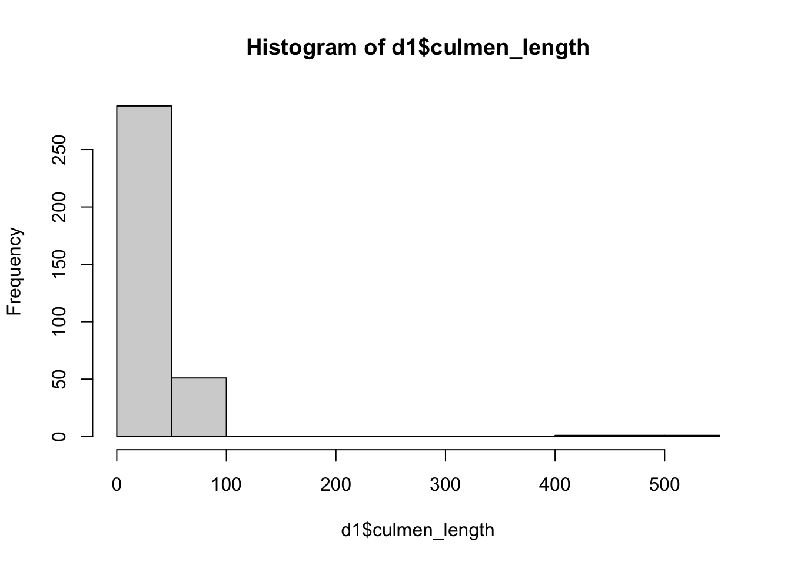
# check with a bivariate plot with mass.
plot(d1$body_mass, d1$culmen_length)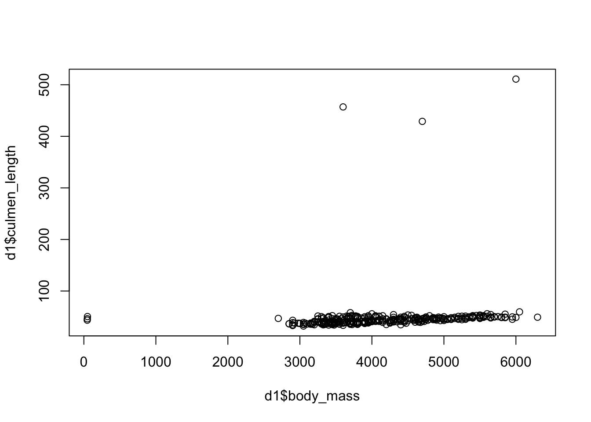
Now we see that there are three penguins with really really long culmens (300+mm) that could be typos. If we don’t know, we might need to remove these penguins. But let’s suppose that we somehow know that this is because of a misplaced decimal point (for example if we could verify with field records), and letʻs fix this:
d2 <- d1
cl[ cl > 300 ] [1] NA 429 511 NA 457NAʻs will match the condition cl>300, because we donʻt really know, so R returns it to be conservative. We donʻt want NAs, so letʻs exclude them with !is.na() where the ! is “not” or the opposite of is.na. The logical & which requires both conditions to be true (i.e., I want to be rich AND famous):
cl[ !is.na(cl) & cl>300 ][1] 429 511 457cl[ !is.na(cl) & cl>300 ] <- cl[ !is.na(cl) & cl>300 ]/10
d2$culmen_length <- cl
skimr::skim(d2)| Name | d2 |
| Number of rows | 344 |
| Number of columns | 17 |
| _______________________ | |
| Column type frequency: | |
| character | 10 |
| numeric | 7 |
| ________________________ | |
| Group variables | None |
Variable type: character
| skim_variable | n_missing | complete_rate | min | max | empty | n_unique | whitespace |
|---|---|---|---|---|---|---|---|
| study_name | 0 | 1.00 | 7 | 7 | 0 | 3 | 0 |
| species | 0 | 1.00 | 6 | 9 | 0 | 3 | 0 |
| region | 0 | 1.00 | 6 | 6 | 0 | 1 | 0 |
| island | 0 | 1.00 | 5 | 9 | 0 | 3 | 0 |
| stage | 0 | 1.00 | 18 | 18 | 0 | 1 | 0 |
| id | 0 | 1.00 | 4 | 6 | 0 | 190 | 0 |
| clutch_completion | 0 | 1.00 | 2 | 3 | 0 | 2 | 0 |
| egg | 0 | 1.00 | 10 | 10 | 0 | 50 | 0 |
| sex | 11 | 0.97 | 4 | 6 | 0 | 2 | 0 |
| comment | 290 | 0.16 | 18 | 68 | 0 | 10 | 0 |
Variable type: numeric
| skim_variable | n_missing | complete_rate | mean | sd | p0 | p25 | p50 | p75 | p100 | hist |
|---|---|---|---|---|---|---|---|---|---|---|
| sn | 0 | 1.00 | 63.15 | 40.43 | 1.00 | 29.00 | 58.00 | 95.25 | 152.00 | ▇▇▆▅▃ |
| culmen_length | 2 | 0.99 | 43.92 | 5.46 | 32.10 | 39.23 | 44.45 | 48.50 | 59.60 | ▃▇▇▆▁ |
| culmen_depth | 2 | 0.99 | 17.15 | 1.97 | 13.10 | 15.60 | 17.30 | 18.70 | 21.50 | ▅▅▇▇▂ |
| flipper_length | 2 | 0.99 | 200.92 | 14.06 | 172.00 | 190.00 | 197.00 | 213.00 | 231.00 | ▂▇▃▅▂ |
| body_mass | 2 | 0.99 | 4159.78 | 888.53 | 47.00 | 3550.00 | 4000.00 | 4750.00 | 6300.00 | ▁▁▇▇▃ |
| delta15n | 14 | 0.96 | 8.73 | 0.55 | 7.63 | 8.30 | 8.65 | 9.17 | 10.03 | ▃▇▆▅▂ |
| delta13c | 13 | 0.96 | -25.69 | 0.79 | -27.02 | -26.32 | -25.83 | -25.06 | -23.79 | ▆▇▅▅▂ |
hist(d2$culmen_length)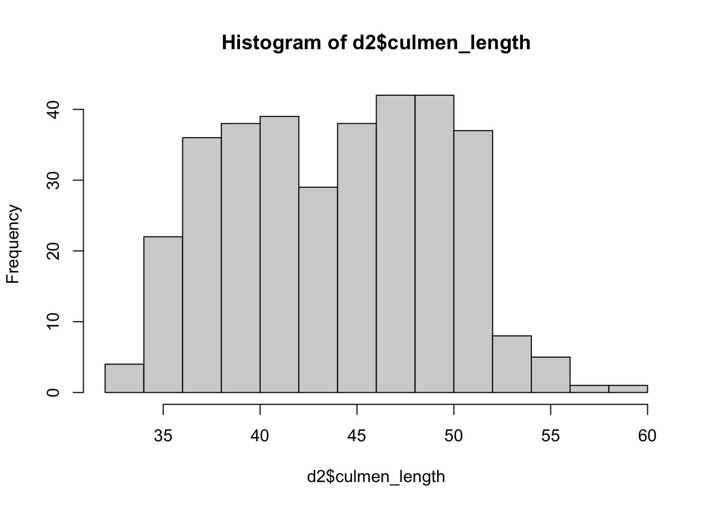
plot(d2$body_mass, d2$culmen_length)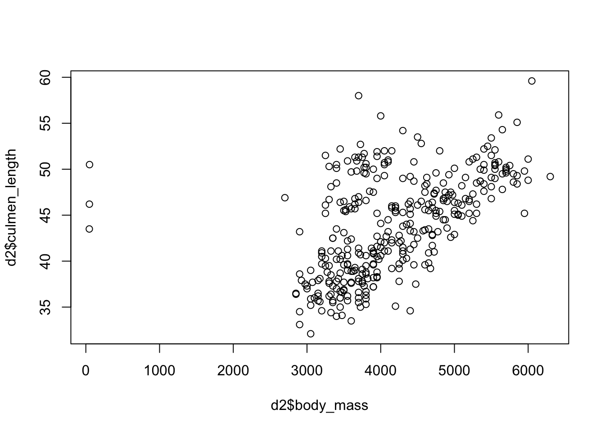
Now let’s look at body mass.
There are penguins with body mass of <100g when the others are over 3000. Perhaps these are new chicks? But they are supposed to be adults. Letʻs remove them.
hist(d2$body_mass)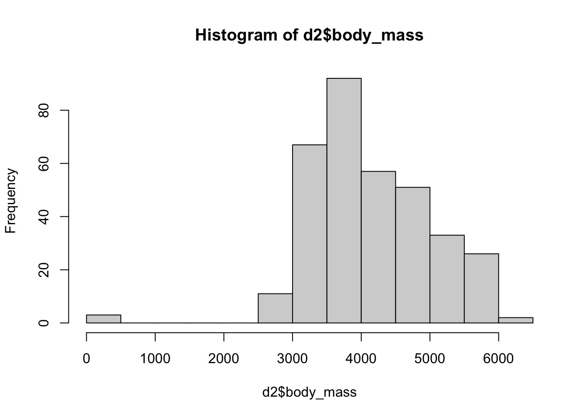
Mass is the main size variable, so we will probably need to remove the individuals with missing masses in order to be able to analyze the data.
d3 <- d2
mm <- d3$body_mass
# replace tiny masses with NA
mm[ mm < 100 ] <- NA
# find which rows have NA for mass
nas <- which( is.na(mm) )
# drop the penguins (rows) with missing masses
d3 <- d3[ -nas, ]
skimr::skim(d3)| Name | d3 |
| Number of rows | 339 |
| Number of columns | 17 |
| _______________________ | |
| Column type frequency: | |
| character | 10 |
| numeric | 7 |
| ________________________ | |
| Group variables | None |
Variable type: character
| skim_variable | n_missing | complete_rate | min | max | empty | n_unique | whitespace |
|---|---|---|---|---|---|---|---|
| study_name | 0 | 1.00 | 7 | 7 | 0 | 3 | 0 |
| species | 0 | 1.00 | 6 | 9 | 0 | 3 | 0 |
| region | 0 | 1.00 | 6 | 6 | 0 | 1 | 0 |
| island | 0 | 1.00 | 5 | 9 | 0 | 3 | 0 |
| stage | 0 | 1.00 | 18 | 18 | 0 | 1 | 0 |
| id | 0 | 1.00 | 4 | 6 | 0 | 190 | 0 |
| clutch_completion | 0 | 1.00 | 2 | 3 | 0 | 2 | 0 |
| egg | 0 | 1.00 | 10 | 10 | 0 | 50 | 0 |
| sex | 9 | 0.97 | 4 | 6 | 0 | 2 | 0 |
| comment | 287 | 0.15 | 25 | 68 | 0 | 8 | 0 |
Variable type: numeric
| skim_variable | n_missing | complete_rate | mean | sd | p0 | p25 | p50 | p75 | p100 | hist |
|---|---|---|---|---|---|---|---|---|---|---|
| sn | 0 | 1.00 | 63.13 | 40.33 | 1.00 | 29.50 | 58.00 | 95.00 | 152.00 | ▇▇▆▅▃ |
| culmen_length | 0 | 1.00 | 43.90 | 5.47 | 32.10 | 39.20 | 44.40 | 48.50 | 59.60 | ▅▇▇▆▁ |
| culmen_depth | 0 | 1.00 | 17.17 | 1.97 | 13.10 | 15.65 | 17.30 | 18.70 | 21.50 | ▅▅▇▇▂ |
| flipper_length | 0 | 1.00 | 200.79 | 14.05 | 172.00 | 190.00 | 197.00 | 213.00 | 231.00 | ▂▇▃▅▂ |
| body_mass | 0 | 1.00 | 4196.17 | 803.20 | 2700.00 | 3550.00 | 4000.00 | 4750.00 | 6300.00 | ▃▇▅▃▂ |
| delta15n | 12 | 0.96 | 8.74 | 0.55 | 7.63 | 8.30 | 8.66 | 9.18 | 10.03 | ▃▇▆▅▂ |
| delta13c | 11 | 0.97 | -25.68 | 0.79 | -27.02 | -26.32 | -25.83 | -25.06 | -23.79 | ▆▇▅▅▂ |
hist(d3$body_mass)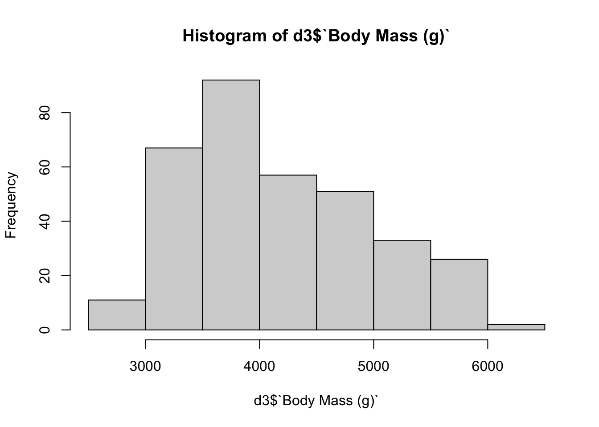
plot(d3$body_mass, d3$culmen_length)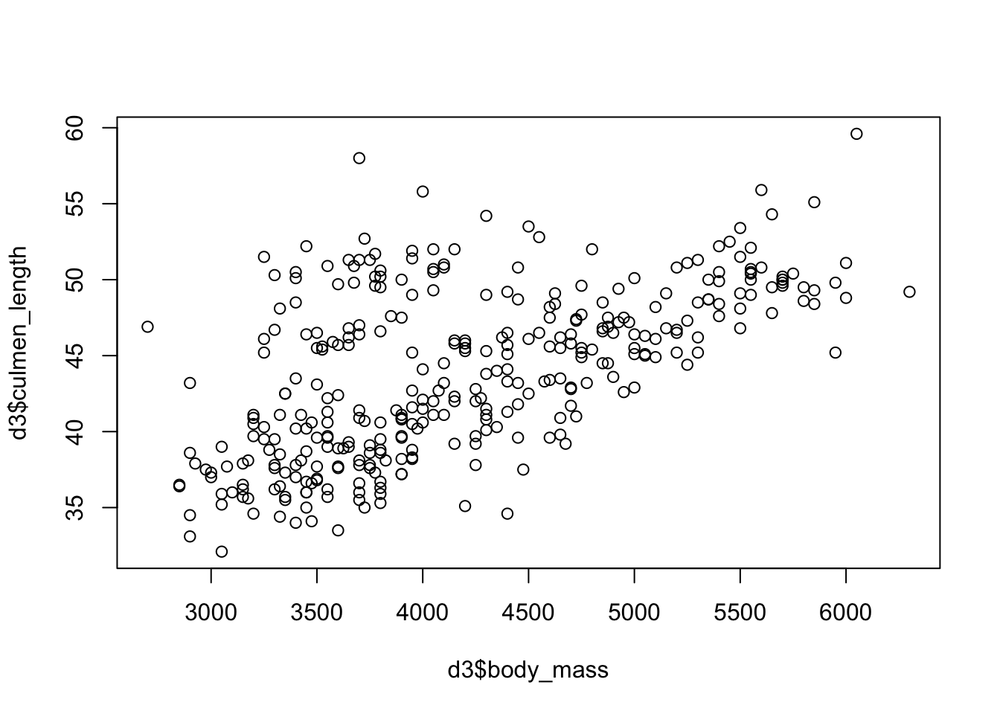
Note: Some analysis methods can deal with missing values, so it’s not always necessary. Or it may be fine to have it in some of the variables but probably not the size variable. This should be adjusted based on your planned analysis approach.
Factors
We also want to have species, sex, and island coded as a categorical/factor variable:
d3$species <- as.factor(d3$species)
d3$sex <- as.factor(d3$sex)
d3$island <- as.factor(d3$island)
skimr::skim(d3)| Name | d3 |
| Number of rows | 339 |
| Number of columns | 17 |
| _______________________ | |
| Column type frequency: | |
| character | 7 |
| factor | 3 |
| numeric | 7 |
| ________________________ | |
| Group variables | None |
Variable type: character
| skim_variable | n_missing | complete_rate | min | max | empty | n_unique | whitespace |
|---|---|---|---|---|---|---|---|
| study_name | 0 | 1.00 | 7 | 7 | 0 | 3 | 0 |
| region | 0 | 1.00 | 6 | 6 | 0 | 1 | 0 |
| stage | 0 | 1.00 | 18 | 18 | 0 | 1 | 0 |
| id | 0 | 1.00 | 4 | 6 | 0 | 190 | 0 |
| clutch_completion | 0 | 1.00 | 2 | 3 | 0 | 2 | 0 |
| egg | 0 | 1.00 | 10 | 10 | 0 | 50 | 0 |
| comment | 287 | 0.15 | 25 | 68 | 0 | 8 | 0 |
Variable type: factor
| skim_variable | n_missing | complete_rate | ordered | n_unique | top_counts |
|---|---|---|---|---|---|
| species | 0 | 1.00 | FALSE | 3 | Ade: 151, Gen: 120, Chi: 68 |
| island | 0 | 1.00 | FALSE | 3 | Bis: 164, Dre: 124, Tor: 51 |
| sex | 9 | 0.97 | FALSE | 2 | MAL: 168, FEM: 162 |
Variable type: numeric
| skim_variable | n_missing | complete_rate | mean | sd | p0 | p25 | p50 | p75 | p100 | hist |
|---|---|---|---|---|---|---|---|---|---|---|
| sn | 0 | 1.00 | 63.13 | 40.33 | 1.00 | 29.50 | 58.00 | 95.00 | 152.00 | ▇▇▆▅▃ |
| culmen_length | 0 | 1.00 | 43.90 | 5.47 | 32.10 | 39.20 | 44.40 | 48.50 | 59.60 | ▅▇▇▆▁ |
| culmen_depth | 0 | 1.00 | 17.17 | 1.97 | 13.10 | 15.65 | 17.30 | 18.70 | 21.50 | ▅▅▇▇▂ |
| flipper_length | 0 | 1.00 | 200.79 | 14.05 | 172.00 | 190.00 | 197.00 | 213.00 | 231.00 | ▂▇▃▅▂ |
| body_mass | 0 | 1.00 | 4196.17 | 803.20 | 2700.00 | 3550.00 | 4000.00 | 4750.00 | 6300.00 | ▃▇▅▃▂ |
| delta15n | 12 | 0.96 | 8.74 | 0.55 | 7.63 | 8.30 | 8.66 | 9.18 | 10.03 | ▃▇▆▅▂ |
| delta13c | 11 | 0.97 | -25.68 | 0.79 | -27.02 | -26.32 | -25.83 | -25.06 | -23.79 | ▆▇▅▅▂ |
Bivariate Plots
We look through all of the data, variable by variable, or by pairs of variables to check on the distributions of the data and for any potential errors in the data.
We make bivariate plots for each continous variable to ensure there are no further errors. It is a good practice to check on the distribution of the data as well.
# bivariate plots of each numeric variable with mass to ensure there are no further
# errors.:
plot(d3$body_mass, d3$culmen_length, xlab="Body Mass (g)", ylab="Culmen Length (mm)")
plot(d3$body_mass, d3$culmen_depth, xlab="Body Mass (g)", ylab="Culmen Depth (mm)")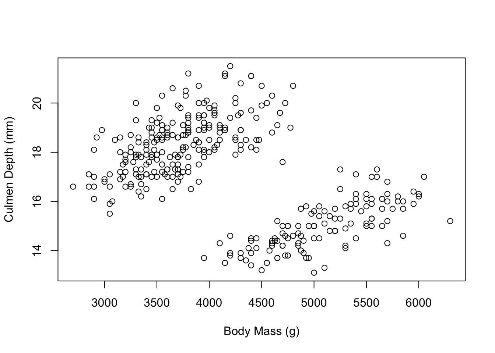
plot(d3$body_mass, d3$flipper_length, xlab="Body Mass (g)", ylab="Flipper Length (mm)")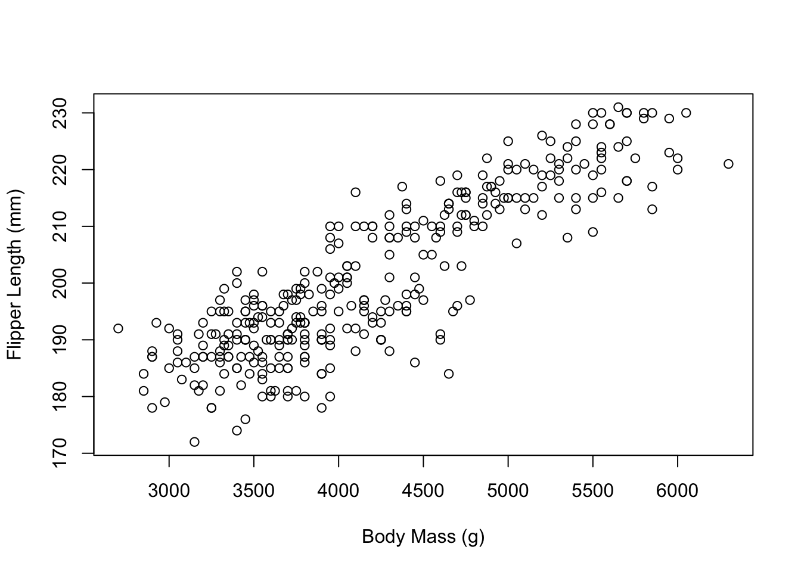
plot(d3$body_mass, d3$delta15n, xlab="Body Mass (g)", ylab="Delta 15 N")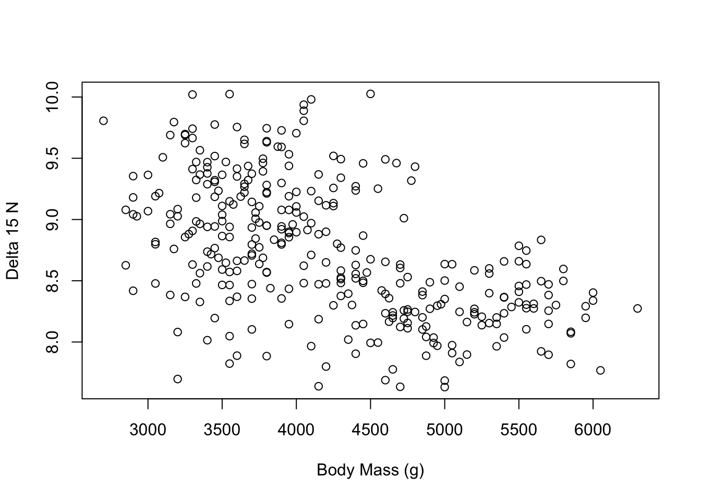
plot(d3$body_mass, d3$delta13c, xlab="Body Mass (g)", ylab="Delta 13 C")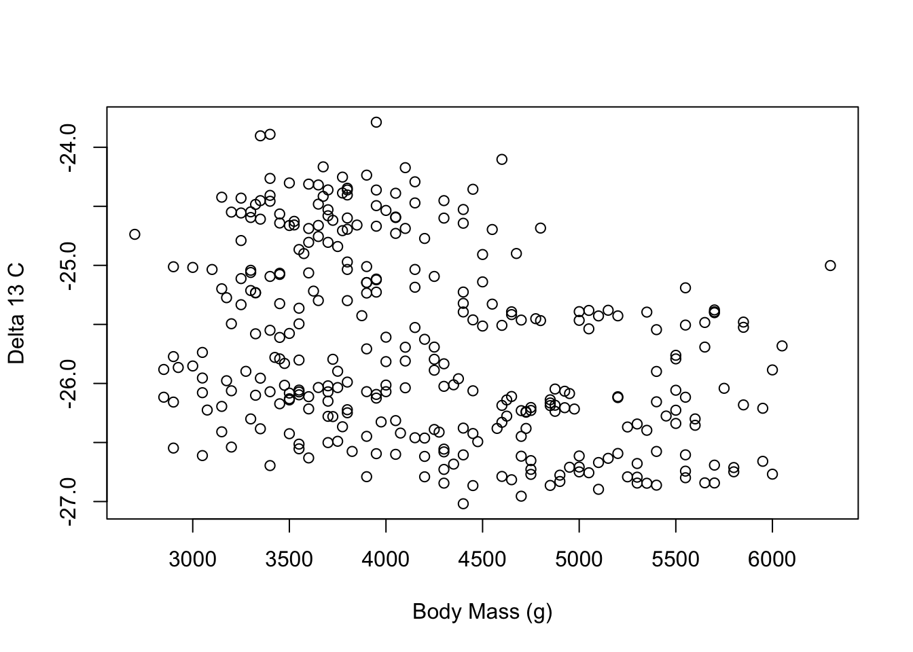
Histograms by Species
We make histograms or densities of mass by each species, to check for any potential category errors, extra categories, etc.
# We will not subset by region, stage as they have only 1 value
# nor eggdate and sample number which have many values
require(ggplot2)Loading required package: ggplot2hist(d3$body_mass) #a single histogram of mass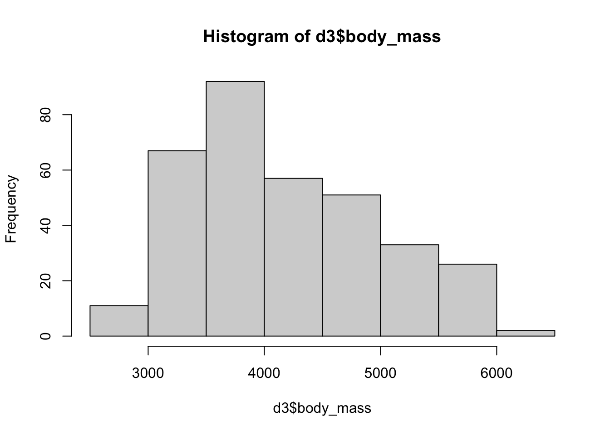
d3 %>% # mass histogram by species
ggplot( aes(x= body_mass)) +
geom_histogram( aes(fill=species), alpha=.5) `stat_bin()` using `bins = 30`. Pick better value with `binwidth`.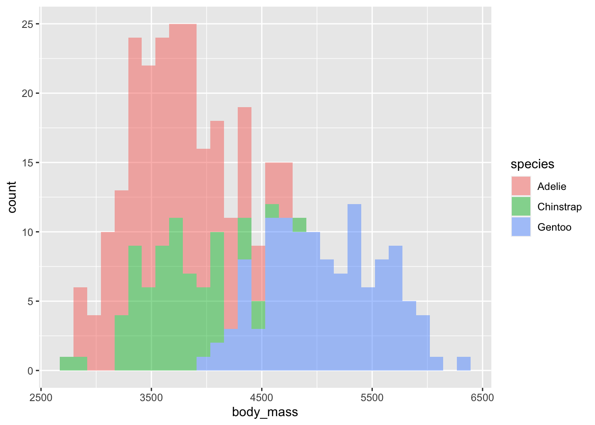
d3 %>% # mass density by species
ggplot( aes(x= body_mass)) +
geom_density( aes(fill=species), alpha=.5) 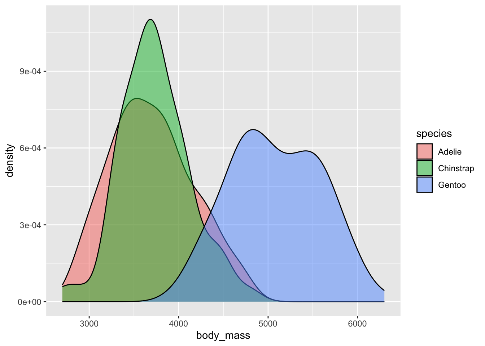
d3 %>% # by island
ggplot( aes(x= body_mass)) +
geom_histogram( aes(fill=island), alpha=.5) `stat_bin()` using `bins = 30`. Pick better value with `binwidth`.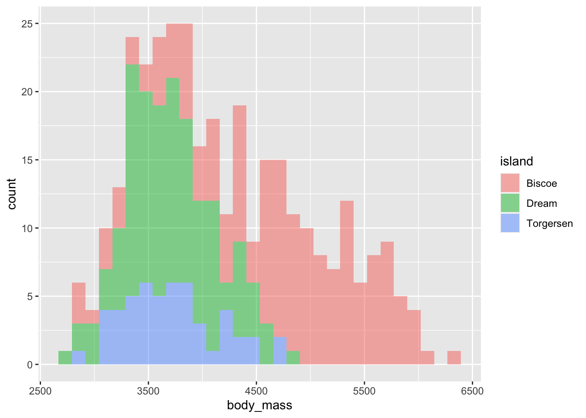
d3 %>%
ggplot( aes(x= body_mass)) +
geom_density( aes(fill=island), alpha=.5)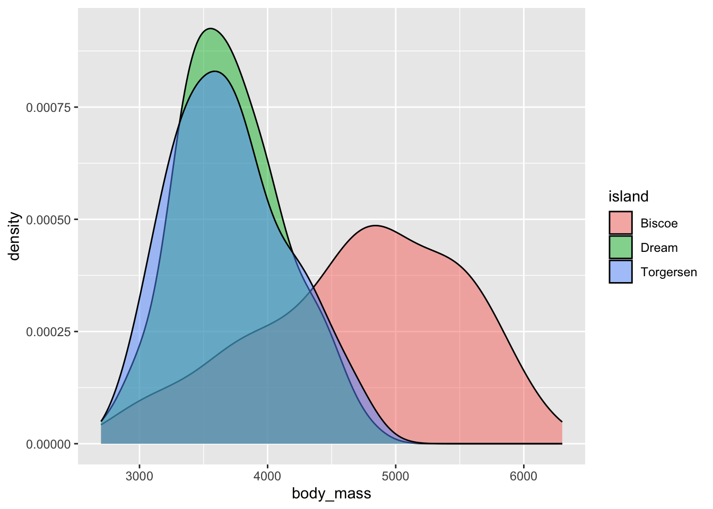
d3 %>% # by clutch completion
ggplot( aes(x= body_mass)) +
geom_histogram( aes(fill=clutch_completion), alpha=.5) `stat_bin()` using `bins = 30`. Pick better value with `binwidth`.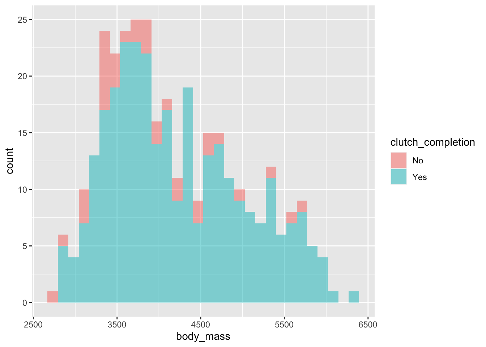
d3 %>%
ggplot( aes(x= body_mass)) +
geom_density( aes(fill= clutch_completion), alpha=.5) 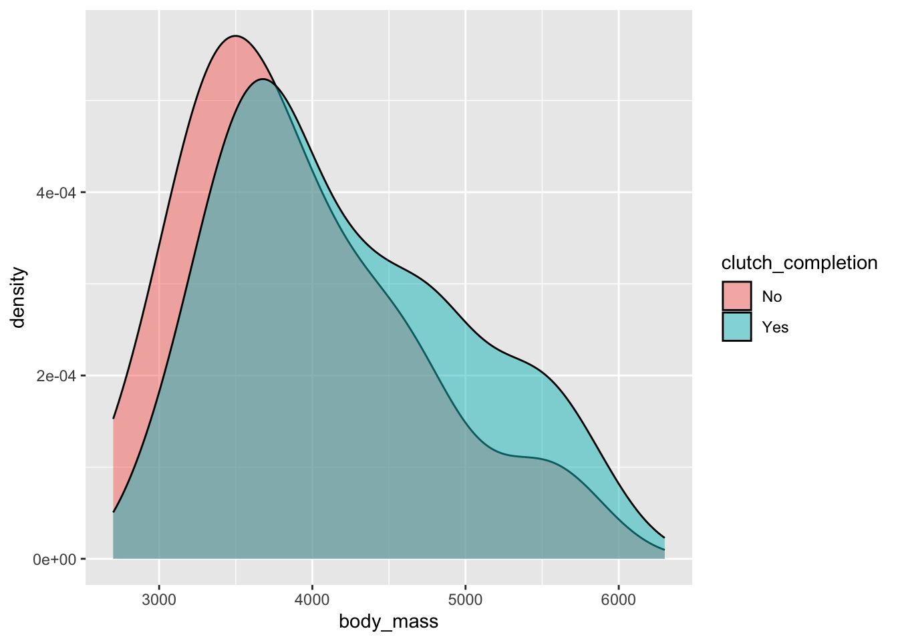
d3 %>% # by sex
ggplot( aes(x= body_mass)) +
geom_histogram( aes(fill=sex), alpha=.5) `stat_bin()` using `bins = 30`. Pick better value with `binwidth`.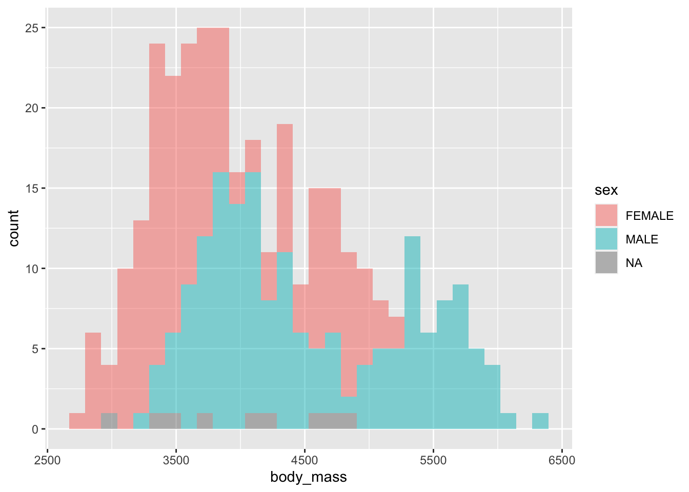
d3 %>%
ggplot( aes(x= body_mass)) +
geom_density( aes(fill=sex), alpha=.5) 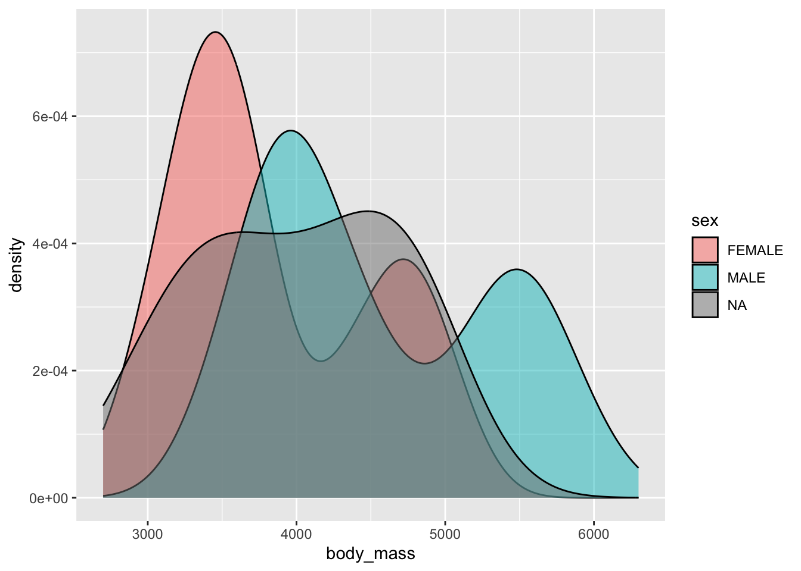
Finalize your cleaned dataset.
Drop any variables (columns) that we wonʻt analyze. We also make a new data dictionary to save with the cleaned data.
d3 <- d3 %>% select(-c('study_name', 'id', 'sn'))
skimr::skim(d3)| Name | d3 |
| Number of rows | 339 |
| Number of columns | 14 |
| _______________________ | |
| Column type frequency: | |
| character | 5 |
| factor | 3 |
| numeric | 6 |
| ________________________ | |
| Group variables | None |
Variable type: character
| skim_variable | n_missing | complete_rate | min | max | empty | n_unique | whitespace |
|---|---|---|---|---|---|---|---|
| region | 0 | 1.00 | 6 | 6 | 0 | 1 | 0 |
| stage | 0 | 1.00 | 18 | 18 | 0 | 1 | 0 |
| clutch_completion | 0 | 1.00 | 2 | 3 | 0 | 2 | 0 |
| egg | 0 | 1.00 | 10 | 10 | 0 | 50 | 0 |
| comment | 287 | 0.15 | 25 | 68 | 0 | 8 | 0 |
Variable type: factor
| skim_variable | n_missing | complete_rate | ordered | n_unique | top_counts |
|---|---|---|---|---|---|
| species | 0 | 1.00 | FALSE | 3 | Ade: 151, Gen: 120, Chi: 68 |
| island | 0 | 1.00 | FALSE | 3 | Bis: 164, Dre: 124, Tor: 51 |
| sex | 9 | 0.97 | FALSE | 2 | MAL: 168, FEM: 162 |
Variable type: numeric
| skim_variable | n_missing | complete_rate | mean | sd | p0 | p25 | p50 | p75 | p100 | hist |
|---|---|---|---|---|---|---|---|---|---|---|
| culmen_length | 0 | 1.00 | 43.90 | 5.47 | 32.10 | 39.20 | 44.40 | 48.50 | 59.60 | ▅▇▇▆▁ |
| culmen_depth | 0 | 1.00 | 17.17 | 1.97 | 13.10 | 15.65 | 17.30 | 18.70 | 21.50 | ▅▅▇▇▂ |
| flipper_length | 0 | 1.00 | 200.79 | 14.05 | 172.00 | 190.00 | 197.00 | 213.00 | 231.00 | ▂▇▃▅▂ |
| body_mass | 0 | 1.00 | 4196.17 | 803.20 | 2700.00 | 3550.00 | 4000.00 | 4750.00 | 6300.00 | ▃▇▅▃▂ |
| delta15n | 12 | 0.96 | 8.74 | 0.55 | 7.63 | 8.30 | 8.66 | 9.18 | 10.03 | ▃▇▆▅▂ |
| delta13c | 11 | 0.97 | -25.68 | 0.79 | -27.02 | -26.32 | -25.83 | -25.06 | -23.79 | ▆▇▅▅▂ |
Save data
Save the clean data as processed data.
processeddata <- d3 # clean dataLocation to save file.
save_data_location <- "../../Data/Processed_data/processeddata.rds"
saveRDS(processeddata, file = save_data_location)
save_data_location_csv <- "../../Data/Processed_data/processeddata.csv"
write.csv(processeddata, file = save_data_location_csv, row.names=FALSE)Finally, we save the clean data as RDS file. I suggest you save your processed and cleaned data as RDS or RDA/Rdata files, as well as a copy as .csv
RDS/Rdata preserves coding like factors, characters, numeric, etc. If you save as CSV, that information would get lost. However, CSV is better for sharing with others since it’s plain text. If you do CSV, you might want to write down somewhere what each variable is (i.e. a data dictionary).
Notes
Anything you don’t want loaded into the Quarto file but keep in the R file, just give it its own label and then just leave that label out of the Quarto file. For example, you may try excluding some of the excessive comments.
Dealing with NA or “bad” data: Removing anyone who had “faulty” or missing data is one approach, but it’s often not the best. Based on your question and your analysis approach, you might want to do cleaning differently (e.g. keep individuals with some missing information)
Saving data as RDS: I suggest you save your processed and cleaned data as RDS or RDA/Rdata files. This preserves coding like factors, characters, numeric, etc. If you save as CSV, that information would get lost. However, CSV is better for sharing with others since it’s plain text.
If you do CSV, you must to write down somewhere what each variable is (i.e. in a data dictionary).
See here for some suggestions on how to store your processed data: http://www.sthda.com/english/wiki/saving-data-into-r-data-format-rds-and-rdata